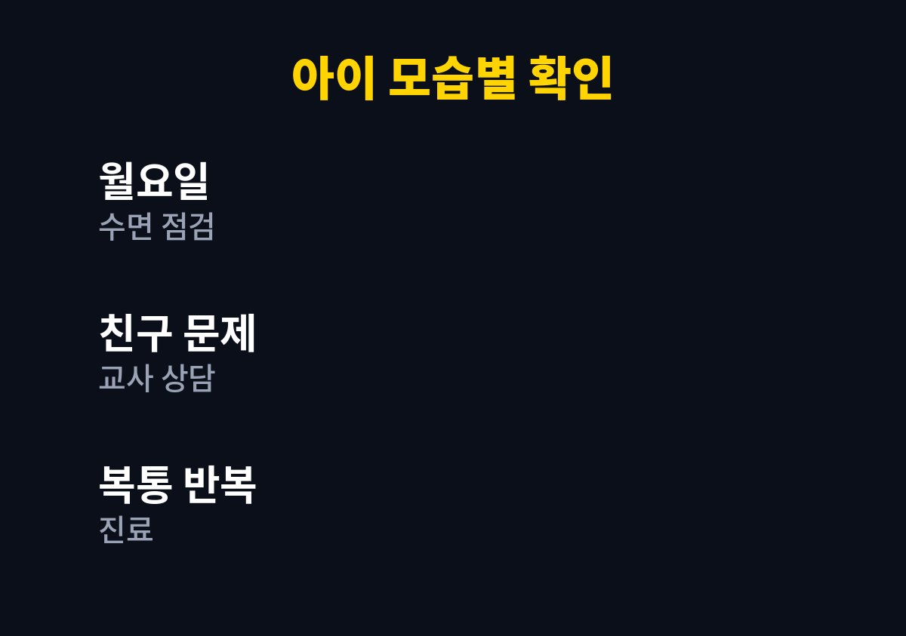
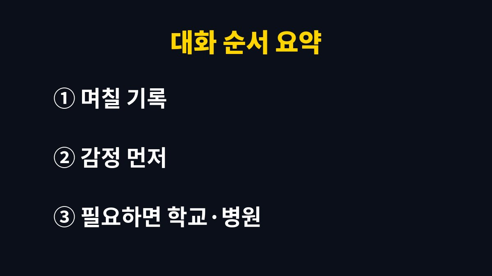

아이가 학교 가기 싫다고 할 때 가장 먼저 필요한 것은 이유 캐묻기가 아니라 그 말을 일단 받아 주는 한 문장이다.
아침마다 같은 말이 반복되면 부모 마음이 급해지는데, 그 급함이 아이에게는 그대로 전해진다.
상황별로 살펴야 할 신호가 다르고, 병원이나 학교에 알려야 할 선도 있어 차례로 나눠 적는다.
같은 문장이라도 아이마다 뜻이 다르다.
늦잠 때문에 하는 투정일 때도 있고, 친구와의 일이나 수업이 어려워서일 때도 있다.
처음에는 이유를 아이 스스로도 모르는 경우가 많다.
학년이 올라가는 시기나 학기 초, 방학이 끝난 직후에는 이런 말이 더 자주 나온다.
생활 리듬이 바뀌는 때라 몸이 먼저 지치기 때문이다.
그래서 말 자체보다 언제부터, 어떤 날에 그런 말을 하는지가 단서가 된다.
| 아이의 모습 | 생각해 볼 사정 | 먼저 할 일 |
|---|---|---|
| 월요일 아침에만 심하다 | 주말 뒤 피로, 긴장 | 일요일 밤 수면 시간 점검 |
| 특정 과목이 있는 날만 싫어한다 | 수업이나 숙제 부담 | 그 과목 이야기를 가볍게 꺼내기 |
| 친구 이름을 피하거나 말수가 줄었다 | 또래 관계의 어려움 | 담임교사와 상담 |
| 배나 머리가 아프다며 반복해 호소한다 | 몸의 문제 또는 불안 | 소아청소년과 진료 |

부모가 자주 하는 짐작은 "게을러서" 또는 "친구가 없어서"다.
둘 다 확인되지 않은 추측이다.
표의 줄 중 아이에게 가까운 것을 고르되, 하나로 단정하지 않고 두 가지가 겹칠 수 있다는 점을 열어 둔다.
아침 준비 시간이 빠듯한 집이라면 말을 걸기 전에 시간부터 확보한다.
가방과 옷을 전날 밤에 챙겨 두면 현관 앞에서 실랑이할 시간이 줄어든다.
다만 아침 준비를 아무리 줄여도 아이가 두려워서 못 가는 것이라면 소용이 없으니, 그때는 이유를 찾는 쪽으로 방향을 바꾼다.
왜 가기 싫은지 대라고 몰아붙이면 아이는 그럴듯한 대답을 지어내거나 입을 닫는다.
대신 "가기 싫은 마음이 들었구나" 정도로 감정만 받아 주고 말을 멈춘다.
가느냐 마느냐를 묻는 대신 "엄마가 문 앞까지 같이 갈까, 아니면 혼자 걸어갈까"처럼 방법을 고르게 한다.
선택지가 두 개이면 아이는 거절이 아니라 결정을 하게 된다.
이 방법이 통하지 않는 날도 있다. 그런 날은 억지로 더 밀지 않고 저녁에 다시 이야기한다.
공감한 직후에 곧바로 가야 한다고 붙이면 앞의 말이 없던 것이 된다.
할 말이 급하더라도 한 박자 쉬고 말한다.
한 가지 장면을 떠올려 본다. 신발을 신다 말고 현관에 주저앉은 아이가 "학교 안 가"라고 말한다.
이때 "그게 무슨 소리야"라고 받으면 대화는 바로 싸움이 된다.
"오늘은 가기 싫은 날이구나"라고 받으면 아이는 적어도 혼자가 아니라는 것을 느낀다.
그다음에 신발을 같이 신는다.
부모가 먼저 한숨을 쉬거나 시계를 자꾸 보는 모습도 아이에게는 신호가 된다. 말보다 표정이 먼저 전해지는 아침이다.
아침은 시간이 없어 대화가 길어지기 어렵다.
이야기는 저녁 식사 뒤나 잠들기 전, 아이가 긴장을 푼 시간에 꺼내는 편이 낫다.
질문은 "오늘 제일 힘든 시간이 언제였니"처럼 범위를 좁혀서 한다.
기록은 길게 쓸 필요가 없다.
날짜, 아침 기분, 아이가 한 말 한 줄이면 충분하다.
이 기록은 나중에 담임교사나 의사를 만날 때 설명하기 쉬운 자료가 된다.
부모의 기억은 불안한 날일수록 부정확해지기 때문이다.

담임교사에게는 아이를 탓하는 말투 대신 "요즘 아침마다 학교 가기 싫다고 해서 학교생활이 궁금하다"처럼 상황을 설명하며 시작한다.
교사가 보는 교실 모습과 집에서 보는 모습이 다를 수 있어서, 둘을 맞춰 보는 것만으로 실마리가 잡히는 경우가 있다.
대화가 잘 풀린 날에도 다음 날 아침에 같은 말이 나올 수 있다.
하루 만에 바뀌길 기대하면 부모가 먼저 지친다.
일주일 단위로 좋아졌는지 보고, 기록에서 반복되는 요일이나 시간이 있으면 그 부분에만 손을 댄다.
배가 아프다는 호소가 매번 같은 시간대에 반복되는데 주말에는 사라진다면 몸의 문제와 마음의 부담을 함께 살펴야 한다.
꾀병이라고 단정하지 않고, 먼저 진료를 받아 몸에 이상이 없는지 확인하는 편이 아이에게도 부모에게도 마음이 편하다.
등교를 거부하는 날이 며칠 넘게 이어지거나, 잠과 식욕이 눈에 띄게 달라지거나, 아이가 자기를 심하게 깎아내리는 말을 하면 가정 안에서 풀려는 시도를 멈추고 도움을 청한다.
소아청소년과나 학교 상담 선생님, 지역의 상담 기관에 연락하면 아이 상태에 맞는 방법을 안내받을 수 있다.
어느 방식이 정답인지는 아이마다 다르다.
이 글의 말들도 모든 아이에게 맞는다고 할 수는 없다.
내일 아침에는 이유를 묻는 대신 한 문장의 공감부터 해 보면 된다.
학교에는 담임교사 말고도 상담을 맡은 선생님이 있는 경우가 많다.
담임교사에게 말하기 부담스러우면 학교 대표 전화로 상담 담당자를 물어본다.
아이에게는 "엄마 아빠가 학교 선생님과 이야기해 보려고 한다"고 미리 알려 두면 뒤늦게 알고 놀라는 일이 없다.
아이가 원하지 않는 방식으로 학교에 알리면 신뢰가 깨질 수 있으니 순서와 방법을 아이와 먼저 나눈다.
※ 2026년 기준 공식 자료를 바탕으로 정리한 일반 정보이며, 아이의 발달이나 건강에 걱정이 있다면 소아청소년과 등 전문가와 상담하길 바란다.